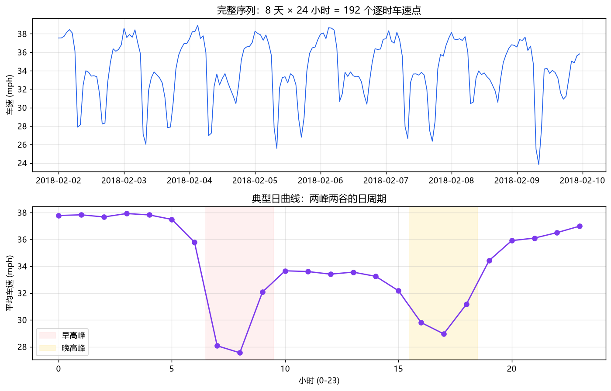
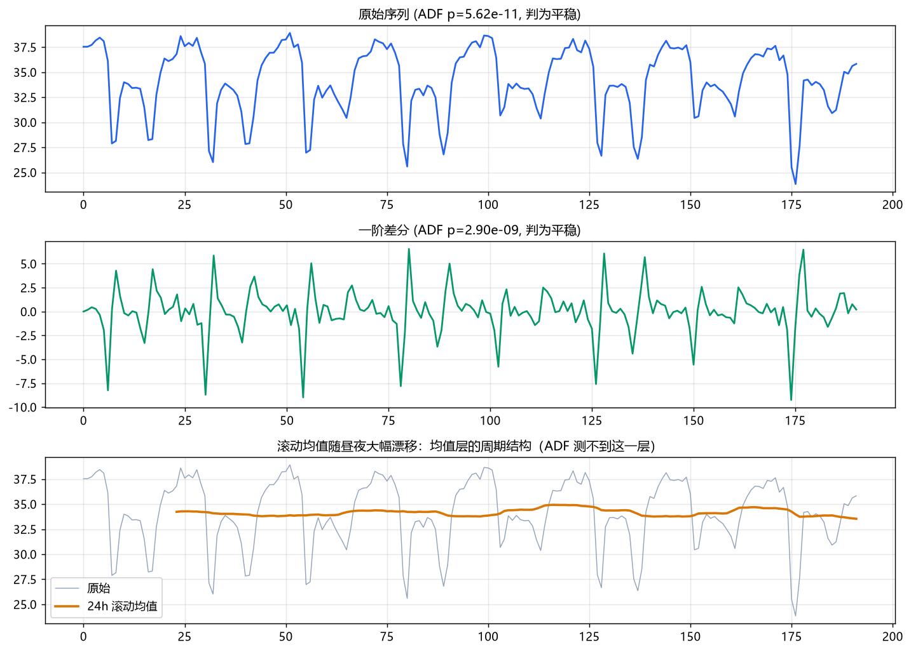
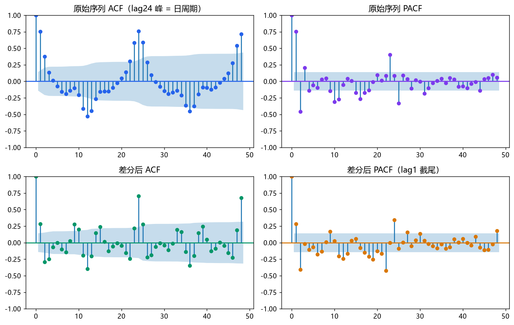
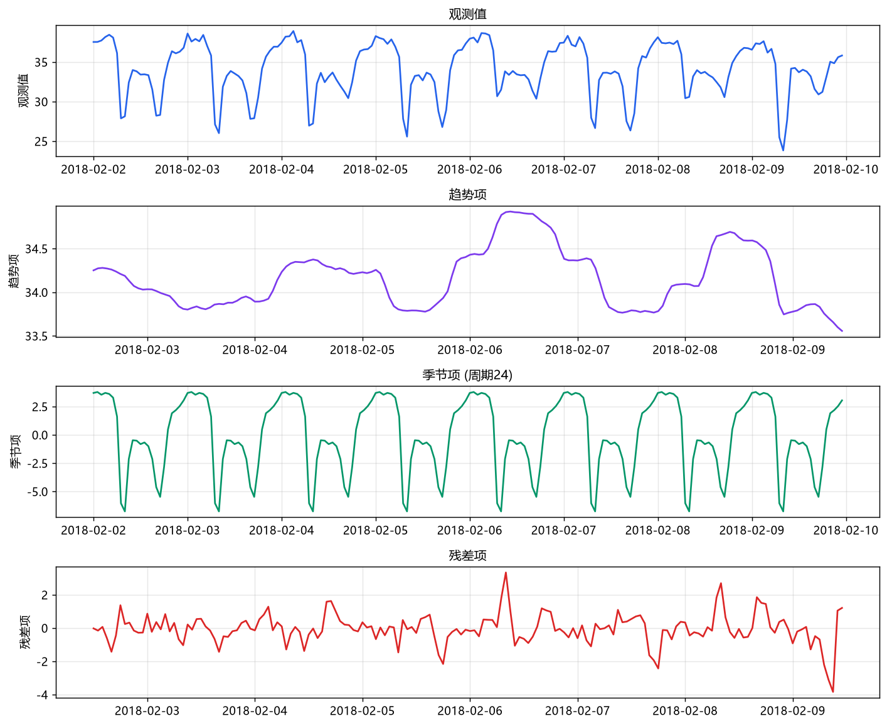
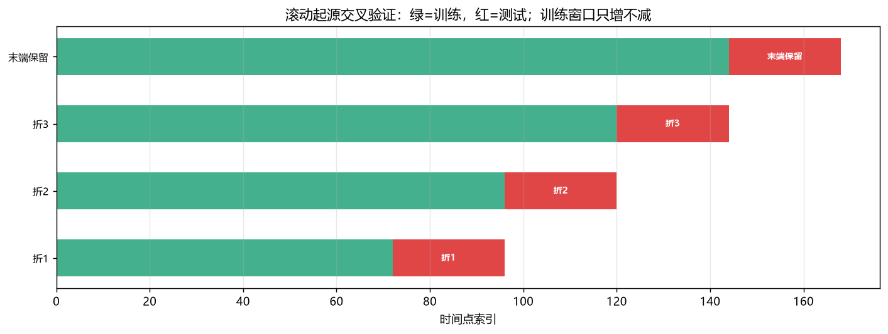
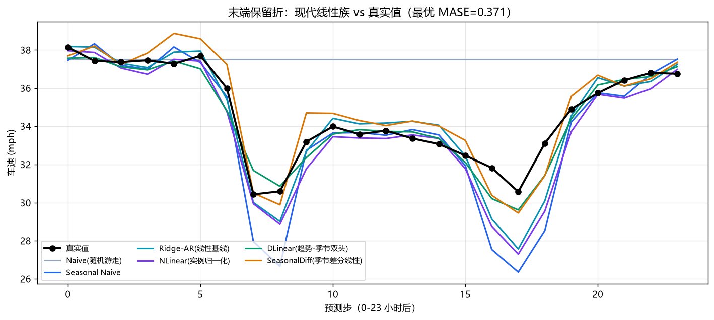
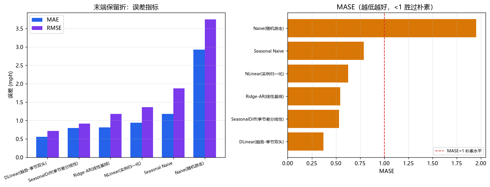
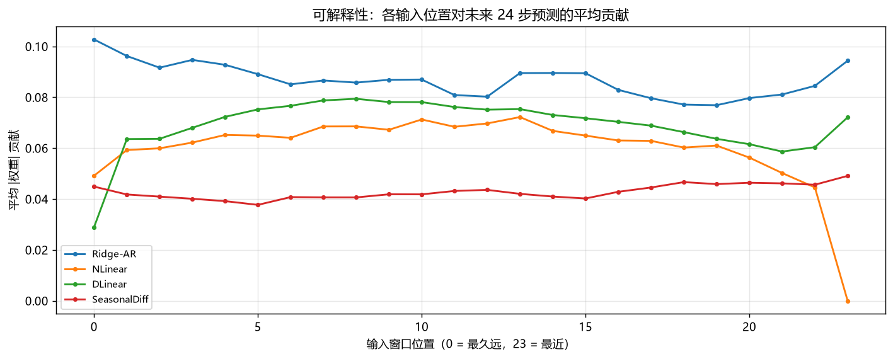
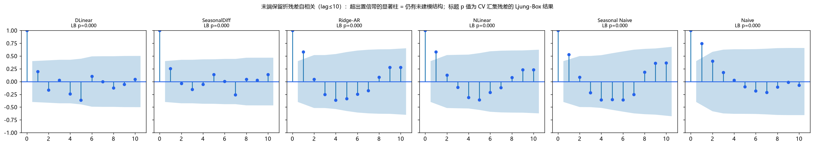

数据: flow.csv（50 万条车辆检测记录）|
代码: timeseries_flow_code.py（现代线性族，闭式岭回归，无需 GPU）|
作业工具: 学生 hw_task_selfservice.py（自助查任务书）| 教师 hw_spec_generator.py（批量发放/复算，不发给学生）|
版本: 2026-10 快照
很多人的时间序列印象停留在"ARIMA + LSTM"。这个印象在 2026 年已经过时了。 本课不复习 LSTM 的用法，而是回答一个更有价值的问题：今天做时序预测，到底该用什么方法？为什么？
时序预测的三代范式（时间轴）
1970-2000 第一代:统计模型 2000-2020 第二代:深度学习 2021-2026 第三代
┌──────────────┐ ┌──────────────┐ ┌──────────────────┐
│ ARIMA │ │ RNN / LSTM │ │ A. 线性模型复兴 │
│ 指数平滑ETS │ │ seq2seq │ │ DLinear │
│ Theta │ ──── 被深度学习压制 ──▶│ DeepAR │ ─────────▶ │ NLinear/RLinear│
│ │ (2018-2021) │ TFT │ │ FITS │
│ 地位: │ │ │ │ B. Patch+Transf. │
│ 仍是基线 & │ │ 地位: │ │ PatchTST │
│ 可解释性 │ │ 被 Transformer│ │ iTransformer │
└──────────────┘ │ 与线性反超 │ │ TimeMixer │
└──────────────┘ │ C. 基础模型TSFM │
❌ RNN 已退场 │ Chronos-2 │
│ TimesFM 2.5/3 │
│ Moirai 2.0 │
└──────────────────┘
| 维度 | 分类/回归 (Day 1-4) | 时间序列预测 (Day 5) |
|---|---|---|
| 数据假设 | 样本独立同分布 | 样本按时间强依赖 |
| 数据划分 | 随机打乱 + K 折 | 滚动起源（时间顺序绝不打乱） |
| 主指标 | 准确率 / F1 | MASE（+ MAE / RMSE） |
| 核心陷阱 | 过拟合 | 数据泄露（本章第 5 章） |
核心纪律：预测 $t+h$ 时只许用 $t$ 及之前的信息。 这一条比任何模型技巧都重要——它同时决定了你的指标是否可信、你的报告是否诚实。
flow.csv 是车辆级交通检测数据：每辆车驶过检测器记一行，
共 503,768 行，含 Speed (mph)、Headway (s)（车头时距，与前车到达时刻之差）、
Gap (s)（车头空距，与前车尾部离开之差）。
# 事件级 -> 时间序列：清洗 + 聚合（本课代码第1步） speed = df["Speed (mph)"].astype(float) df = df.loc[speed.between(10, 80)] # ① 剔除传感器异常读数 df["day"], df["hour"] = df["Date"].dt.date, df["Date"].dt.hour hourly = df.groupby(["day", "hour"])["Speed (mph)"].mean() # ② 逐时平均 # 结果: 8 天 x 24 小时 = 192 个等间隔点，季节周期 s=24
清洗剔除了 8,378 条（1.66%）速度落在 $[10,80]$ mph 之外的记录——真实检测器会输出 121 mph 这类违背物理的读数，那是传感器故障，不是超级跑车。

典型日曲线讲了一个直观的故事：凌晨车少、车速接近自由流（约 38 mph）；7-8 点早高峰跌到 27-28 mph；傍晚 16-18 点再次跌到 29 mph；夜里恢复。这就是季节性最生活化的样子。
$$\text{① } E[y_t] = \mu \quad \text{② } \mathrm{Var}(y_t) = \sigma^2 \quad \text{③ } \mathrm{Cov}(y_t, y_{t-k}) \text{ 只依赖 } k \text{，不依赖 } t$$
ADF 检验的原假设是"存在单位根"（随机游走式不平稳），$p<0.05$ 时拒绝。实测：
| 序列 | ADF 统计量 | p 值 | 结论 |
|---|---|---|---|
| 原始序列 | -7.452 | $5.62\times10^{-11}$ | 平稳 ✅ |
| 一阶差分后 | -6.754 | $2.90\times10^{-9}$ | 平稳 ✅ |

| 模型 | ACF | PACF | 记忆机制 |
|---|---|---|---|
| AR(p) | 拖尾（衰减/振荡） | lag p 处截尾 | 当前值 = 历史值的线性组合 |
| MA(q) | lag q 处截尾 | 拖尾 | 当前值 = 历史噪声的线性组合 |
| ARMA(p,q) | 拖尾 | 拖尾 | 混合 |
图3 的 ACF 给出教科书级证据：lag 24 处显著第二高峰，整条 ACF 呈 24 步周期的波浪。
这就是"日周期"在相关性层面的指纹，也是我们把周期定为 $s=24$、把 look_back 设为 24 的依据。

$$y_t = \underbrace{T_t}_{\text{趋势}} + \underbrace{S_t}_{\text{季节}} + \underbrace{R_t}_{\text{残差}} \quad(\text{加法}) \qquad\qquad y_t = T_t \times S_t \times R_t \quad(\text{乘法})$$
| 成分 | 含义 | 本例中的样子 |
|---|---|---|
| 趋势 $T_t$ | 长期缓慢方向性变化 | 基本平坦（8 天内无系统升降） |
| 季节 $S_t$ | 固定周期重复波动 | 周期 24h 的规则波形，本例的主角 |
| 残差 $R_t$ | 去掉前两者的随机部分 | 高峰时段明显更大 |

DLinear 就是这个结构
（区别是它用因果移动平均做分解，更适合在线预测）。这是"结构先验"胜过"盲目加深度"的典范。
train_test_split(shuffle=True) 或普通 K 折，
等于"用明天训练、去回忆昨天"——这不是预测，是回忆。指标会漂亮得离谱，上线即崩。
这叫数据泄露（data leakage），是时序项目失败的第一大原因。| 泄露形式 | 错误做法 | 正确做法 |
|---|---|---|
| ① 划分泄露 | 随机打乱后划分 | 按时间切分，测试在训练之后 |
| ② 归一化泄露 | 用全序列均值/方差做标准化 | 只用训练段统计量，冻结后套到测试段 |
| ③ 特征泄露 | 滚动统计窗口含当前或未来时刻 | 窗口右端点严格 < 预测目标时刻 |
| ④ 移动平均泄露 | 用居中窗口做平滑 | 用因果（只看过去）窗口 |
trailing_ma() 只用到当前位置为止的数据。
写成 np.convolve(x, np.ones(k)/k, mode='same') 看起来更"标准"，但它会看到未来 2 个点——
在本课这种短序列上，这几个点几乎就是答案本身。本章用 expanding window：训练窗口只增不减，每折测试块紧随其后； 最后一折留作末端保留，完全模拟真实上线预测。
折1: [训练 72 ][测试 24]
折2: [训练 96 ][测试 24]
折3: [训练 120 ][测试 24]
末端: [训练 144 ][测试 24] ← 完全模拟"上线后预测明天"
^ 训练只增不减 ^ 测试永远在训练之后

$$\mathrm{MASE} = \frac{\displaystyle\frac{1}{n}\sum_{t} |y_t - \hat{y}_t|}{\displaystyle\frac{1}{m}\sum_{j}|y_j - y_{j-1}|}$$ 分母是训练段朴素预测的平均绝对误差。
| 指标 | 量纲 | 优点 | 缺点 |
|---|---|---|---|
| MASE | 无量纲 | 跨数据集可比（这是 GIFT-Eval 榜单的通用尺），尺度不变 | 不反映大误差惩罚 |
| MAE | 与 y 相同 | 直观、单位可解释 | 不可跨数据集比 |
| RMSE | 与 y 相同 | 平方惩罚大误差 | 对异常值敏感 |
| MAPE | 百分比 | 无量纲 | 真值近 0 时爆炸；跨序列平均会失真 |
naive_scale() 在训练段上算 MASE 分母。
如果用全序列算分母，测试集信息就漏进了训练——这正是第 5.1 节第 ② 条泄露的隐蔽版本。
MAPE 之所以逐步被 MASE 取代，正是因为它对"接近零的目标"（流量、销量、缺货）会给出荒谬数值。ARIMA / 指数平滑 / Theta 在今天仍有不可替代的价值，但角色变了：
| 还用不用 | 用在哪里 |
|---|---|
| ✅ 必须用 | Seasonal Naive 作为必备基线；GIFT-Eval 榜单中它就是相对 MASE = 1.00 的参照系。任何新模型先过它这一关。 |
| ✅ 仍常用 | 样本极少、需要预测区间与统计推断的场景；金融/计量类要求可解释的任务；作为集成的一个分量。 |
| ⚠️ 地位下降 | 作为"最强模型"的候选——在周期性强、样本中等的数据上，常被一个带归一化的线性模型超过。 |
本课代码保留 Seasonal Naive 与 Naive 作为基线，但不再把 Holt-Winters / SARIMA
放进对决名单：它们在 192 点的数据上既无优势、又把叙事重心拉回第一代。
你的直觉是对的，RNN 在时序预测中已基本退场。原因不是它"不够好"，而是三条硬伤叠加：
| 硬伤 | 机理 | 后果 |
|---|---|---|
| 递归误差累积 | 多步预测必须把自己的预测喂回输入 | 步数一多就漂移，Moirai/Chronos-2 正是用"非自回归一次出完整 horizon"来规避 |
| 训练不可并行 | $h_t$ 依赖 $h_{t-1}$，时间步之间串行 | GPU 吃不满；Patch/Transformer 可完全并行 |
| 长依赖被结构性削弱 | 信息要逐步传过 $t$ 步 | Day 3 已算过：有效记忆 ~10-20 步，RNN 原生的衰减乘积无法根治 |
2022 年 RevIN（可逆实例归一化）解决了分布漂移问题，2023 年 DLinear 掀起"线性反超 Transformer"的辩论。 核心结构其实极简：
$$\text{NLinear: } \hat{y} = \underbrace{(w \cdot (x - x_{last})) + b}_{\text{在"相对末值"空间预测}} + x_{last}$$ $$\text{DLinear: } \hat{y} = \underbrace{w_1 \cdot \mathrm{MA}(x)}_{\text{趋势头}} + \underbrace{w_2 \cdot (x - \mathrm{MA}(x))}_{\text{季节头}}$$两个关键设计值得单独讲：
把长序列切成 patch 再做注意力，是 2023 年以来最成功的架构改进。
原始逐点输入: [x1][x2][x3][x4][x5][x6][x7][x8] ... 注意力代价 O(L^2)，且单个点信息量太少
↓ patch 化 (patch_len=P, stride=S)
patch 输入: [x1..x4][x5..x8][x9..x12] ... 序列长度 L/P，语义更集中
↓ 线性嵌入 -> Transformer -> 线性头
预测: 未来 H 步
| 代表模型 | 年份/会议 | 核心贡献 |
|---|---|---|
| PatchTST | ICLR 2023 | 通道无关的 patch 分割 + 线性头；GIFT-Eval 总榜第一（相对 MASE 0.86） |
| iTransformer | ICLR 2024 | 反转注意力维度：把"变量"当 token，捕捉跨变量依赖 |
| TimeMixer | ICLR 2024 | 多尺度时间混合，可分解式建模 |
| ModernTCN | NeurIPS 2024 | 大核卷积 + 可变大感受野，卷积复兴路线 |
| TimeXer | 2024 | 显式建模外生变量（exogenous）的 token 化 |
| TimesNet | ICLR 2024 | 用 FFT 捕捉多周期（周/月/年）叠加 |
在超大规模真实时间点（百亿到万亿级）上预训练，一个模型直接零样本（zero-shot）预测 任意未见过的序列，不必逐序列训练。
| 模型 | 机构 | 架构/规模 | 上下文 | 权重许可 | 要点 |
|---|---|---|---|---|---|
| Chronos-2 | Amazon | 编码器 120M | 8192 | Apache 2.0 | 自建部署首选；P1–P99 共 21 个分位数 |
| TimesFM 2.5 | 解码器 200M | 16384 | Apache 2.0 | 单模型零样本；递归生成误差累积 | |
| TimesFM 3.0 | 解码器 330M | 2048(BigQuery) | 非商用 | 2026-08-31 发布，官方榜单最强，但权重仅限 BigQuery 内生产使用 | |
| Moirai 2.0 | Salesforce | MoE + any-variate 注意力 | — | CC BY-NC | 多变量/协变量最强；不可商用 |
| Lag-Llama | ServiceNow | 滞后分词自回归 | 1024 | — | 概率预测、采样灵活 |
| Granite TTM | IBM | Tiny Time Mixer <1M | 1536 | Apache 2.0 | 极小，CPU/边缘可跑 |
| MOMENT | CMU | 掩码预训练 Transformer | 512 | — | 多任务：预测/分类/异常检测/插补 |
| TimeGPT | Nixtla | 商业托管 | — | 商业订阅 | 免运维；需评估数据驻留与治理 |
点预测给你一个数，概率预测给你一个分布——这在库存、容量规划、风险决策里才是真正需要的输出。 技术路线有两条：分位数/集成（Chronos-2 的 21 个分位数、集成模型）与 扩散模型（Diffusion 类方法把预测当作生成任务，如 TimeGrad / CSDI 一脉）。 评估指标从 MAE 换成 CRPS 或分位数损失。GIFT-Eval 榜单也同时报告 CRPS。
你的时序预测任务
|
+-- 样本极少 / 冷启动 / 上千条序列无人力逐条调参 --> 零样本 TSFM (Chronos-2, TimesFM 2.5)
| 先用 Seasonal Naive 兜底对比
+-- 高频(秒/分钟级)、单序列或少量序列 -------------> PatchTST / iTransformer
| 多变量且变量多 -----------------------------> iTransformer / Moirai(注意许可)
+-- 中小规模 + 强周期 + CPU 即可 -----------------> NLinear / DLinear ← 本课重点
| 非线性确实有增益(如含明确阈值/突变) -------> 加浅层 MLP 或小 Transformer
+-- 需要预测区间 / 统计推断 / 极少样本 -----------> 统计模型 (ETS/ARIMA/Theta) 或其集成
+-- 高噪声、信号弱 -------------------------------> 统计集成，别指望深度模型
192 点数据、24 步输入窗口、24 步预测步长、周期 24。全部模型用闭式岭回归实现， 无随机初始化、无 GPU，结果完全确定可复现。
| 模型 | CV MAE（均值±标准差） | CV MASE | 解读 |
|---|---|---|---|
| DLinear（趋势-季节双头） | 0.969 ± 0.371 | 0.650 | 结构最贴合，冠军 |
| Ridge-AR（线性基线） | 1.012 ± 0.179 | 0.677 | 朴素线性已很强 |
| Seasonal Naive | 1.154 ± 0.143 | 0.771 | 零参数基线 |
| NLinear（实例归一化） | 1.173 ± 0.173 | 0.785 | 本数据上归一化收益不明显 |
| SeasonalDiff（季节差分线性） | 1.338 ± 0.736 | 0.884 | 折间波动最大，不稳定 |
| Naive（随机游走） | 3.300 ± 0.410 | 2.210 | 必须被击败 |
| 模型 | MAE (mph) | RMSE (mph) | MASE |
|---|---|---|---|
| DLinear | 0.555 | 0.718 | 0.371 |
| SeasonalDiff | 0.794 | 0.912 | 0.530 |
| Ridge-AR | 0.813 | 1.177 | 0.543 |
| NLinear | 0.936 | 1.362 | 0.625 |
| Seasonal Naive | 1.181 | 1.874 | 0.789 |
| Naive | 2.922 | 3.747 | 1.951 |



模型拟合完，残差应当"什么都不剩"（白噪声）。Ljung-Box 检验的原假设是 "残差为白噪声"：$p > 0.05$ 说明模型已榨干数据；$p < 0.05$ 说明还有结构没被建模。
| 模型 | LB(12) 统计量 | p 值 | 结论 |
|---|---|---|---|
| DLinear | 81.34 | $2.3\times10^{-12}$ | 仍有显著结构 |
| SeasonalDiff | 103.03 | $1.4\times10^{-16}$ | 仍有显著结构 |
| Ridge-AR | 73.61 | $6.7\times10^{-11}$ | 仍有显著结构 |
| NLinear | 92.99 | $1.3\times10^{-14}$ | 仍有显著结构 |
| Seasonal Naive | 87.53 | $1.5\times10^{-13}$ | 仍有显著结构 |
| Naive | 134.33 | $8.3\times10^{-23}$ | 仍有显著结构 |

| 策略 | 做法 | 优点 | 缺点 |
|---|---|---|---|
| 递归式 | 预测 1 步 → 喂回 → 再预测下一步 | 只需一个模型 | 误差累积，早期小错滚雪球 |
| 直接式 | 每个 horizon 单独建模 | 无累积 | 模型数量 ×h |
本课代码用直接多输出（窗口 $\to$ 24 步一次性回归），这也是现代 TSFM （如 Moirai、Chronos-2）一次输出整个 horizon 的理由。
完整的预测要回答"有 95% 把握落在哪个区间"。统计模型天然给区间（get_forecast().conf_int()），
TSFM 用分位数（如 Chronos-2 的 21 个 P1–P99）实现同一件事，
深度模型则需要分位数回归 / MC Dropout / 深度集成等额外技巧。
如果模型 A 的 MAE 是 0.555、模型 B 是 0.813，你能断言 A 更好吗？不能—— 需要检验两者的误差差异 $d_t = e_t^A - e_t^B$ 的均值为零是否被拒绝。 DM 检验正是为此设计的，并且需要小样本修正（Hansen 修正）才可靠。
本课作业把 DM 检验作为必做项，正是为了训练学生不要用"指标好看"代替"差异显著"。
| 机制 | 具体做法 | 能防住什么 |
|---|---|---|
| ① 学号派生任务书 | 学生运行 hw_task_selfservice.py --sid <学号>，
派发目标变量（speed / headway / gap）、方向、车道范围、粒度、
天数、异常值区间、窗口长度、预测步长、CV 折数、随机种子、附加任务 |
AI 无法知道你的参数组合 → 生成的"通用答案"必然答非所问 |
| ② 数据指纹 | 对你聚合后的序列做 SHA256 取前 12 位，报告与代码注释必须出现 | 抄别人的报告，指纹对不上（40 人实测 40 个指纹全不同） |
| ③ 唯一锚点值 | 任务书给出你口径下"折 1 的 Seasonal Naive MASE"，
教师用 --verify 一键复算 | AI 猜不到、同学抄不到；对不上即数字系编造 |
| ④ 可复现性审计 | 教师随机指定某一折、换随机种子重跑你的代码 | AI 生成的代码常跑不通、或换种子后数字对不上 —— 这是最致命的一击 |
任务书由代码确定性生成，但这不等于把整个脚本丢给学生。关键在于 教师复算与学生自助必须得到完全一致的口径——否则学生会按错误参数做半天。 为此拆成两个文件：
| 文件 | 发给谁 | 能力 | 为什么这样切 |
|---|---|---|---|
hw_task_selfservice.py | 学生 | 只有 --sid：查自己的任务书 |
学生自助，零教师维护；无批量能力，拿不到同班别人的口径与锚点值 |
hw_spec_generator.py | 教师留存 | --batch 批量发放 / --verify 复算 / --audit 抽查 |
教师手里留一份原始副本，批改时一键复算学生的数字。此文件不发给学生 |
--batch 能一次列出全班每个人的
数据口径、指纹与锚点值。学生拿到后可直接查到同学的锚点值。虽然填进自己的报告
仍然对不上（教师按本人学号复算），但这等于把"审计底牌"交出去，也让机制失去威慑。
发学生版，留教师版。sha256(学号) → 种子 → 抽参数），
不含任何批次上下文。教师版直接 import 学生版的同一份函数，
所以"我复算"和"他自查"是同一段代码跑出来的——结构上杜绝口径漂移。
$ python hw_task_selfservice.py --sid 202504003
学号 202504003 的专属任务书
目标变量 Headway (s)（车头时距 (s)），异常区间 [0.3, 60.0]
方向/车道 South(南行) / SB_MID
粒度/天数 30min / 5 天 -> 序列 239 点
窗口/步长 look_back 72 -> horizon 8（未来 4.0 小时）
CV 折数 5 折 + 末端保留 随机种子 53709
数据指纹 7fb0197353b2
锚点值 折1 SeasonalNaive MASE = 0.1513
附加任务 必须画出一张『误差随预测步长(1~h)的衰减曲线』，比较递归式与直接式的差别
python hw_spec_generator.py --verify 202504003 # 输出: 数据指纹 = 7fb0197353b2 锚点值 = 0.1513 # 报告里这两个数字对不上 -> 该生报告不是自己跑出来的批量发放：
python hw_spec_generator.py --batch 202504001 ... 202504040
（自动检测口径冲突并告警；实测 40 人班 40 个指纹全唯一）
alpha 的选择过程（必须用训练段内层验证，不许用测试集）。| 文件 | 用途 |
|---|---|
homework/学生作业报告模板.docx |
你要提交的报告。十个小节，含数据指纹/锚点值校验栏、逐折 MASE 表、 三项思考痕迹填写区、AI 使用声明与提交自检清单（≤2 页） |
homework/学生作业指导书.docx |
不会做时看这份。第 0~10 步逐步操作指南，含环境命令、任务书字段解读、 示例代码函数地图、基准数字对照、常见错误排查表、评分标准 |
| 提交物 | 硬性要求 | 对应的造假检测 |
|---|---|---|
| git 仓库 | ≥8 次提交，时间跨度 ≥3 天；提交信息含学号 + 关键指标； 每阶段（数据/建模/CV/诊断/报告）分别提交 | 一次性生成的仓库没有时间跨度；提交信息里的指标必须与报告一致 |
| 报告 ≤2 页 | 必须含：数据指纹、锚点值、反事实成对数字、 三个决定+放弃理由、逐折残差诊断、误差时段分析（≤800 字） | 缺任一项直接扣分；数字对不上教师可复算 |
| 图表 ≥4 张 | 序列+ACF、CV 各折预测对比、残差诊断、误差随步长（或消融） | 图表必须能由代码重新生成 |
| 课堂随机抽查 | 随机指定某一折，要求现场运行并展示该折结果， 并回答："你为什么没用 SARIMA / Transformer？" | 最有效：AI 无法预演随机指定的折 |
| 评分项 | 权重 | 要点 |
|---|---|---|
| 数据重构与指纹 | 15% | 口径严格匹配任务书；指纹自洽；异常值处理有说明 |
| 建模严谨性 | 20% | alpha 内层验证；无测试集调参；模型 B 特征完整且无泄露 |
| 评估协议 | 20% | 滚动起源折数正确；报告均值±标准差；MASE 分母只用训练段 |
| 思考痕迹三项 | 25% | 反事实成对数字 / 三个决定+放弃理由 / 逐折残差诊断 |
| 误差分析 | 10% | 时段归因有数据支撑，不套话 |
| 过程留痕 | 10% | 提交跨度、提交信息、抽查表现 |
--batch 一次生成全班任务书约 1-2 分钟；
批改时对每份报告跑一条 python hw_spec_generator.py --verify <学号>，
核对指纹与锚点值两个数字，即可筛出绝大多数代写/抄袭。
其余精力放在"三个决定 + 放弃理由"的质量上——那才是真正考察思考的地方。
时间序列预测
|
+-------------------+-------------------+
| | |
看结构 选方法 严评估
| | |
ADF 只查单位根 基线: SeasonalNaive 滚动起源 CV
ACF 读出周期 s 现代: NLinear/DLinear 主指标 MASE
分解看三层 Patch:PatchTST 禁: 打乱/泄露
残差查剩余 前沿: TSFM 零样本 审计: 可复现
| | |
v v v
[!] 平稳≠无季节 [!] 简单模型常赢 [!] 数字要能复现
一句话总结：2026 年的时序预测，最重要的能力不是会调 Transformer， 而是知道该用什么、不该用什么。RNN 已退场、线性模型复兴、基础模型接管冷启动， 但 Seasonal Naive 这条基线依然是最锋利的检察官。先看清数据的结构（周期、平稳性、残差）， 再按数据特征选方法（不是按论文热度选），最后用不打乱时间、能被复现的方式诚实地评估。 flow.csv 的 192 个点给出的启示很朴素：贴合结构的简单模型， 常常打败结构错配的复杂模型。
| 方向 | 文献 / 资源 |
|---|---|
| 基准与综述（先读这两篇） | GIFT-Eval (arXiv:2410.10393) — 23 数据集 / 14.4 万序列 / 1.77 亿点，含防泄露预训练集与 17 个基线，是理解当前格局最权威的入口 |
| Deep Learning for Time Series Forecasting: A Survey (arXiv:2503.10198, Int. J. ML 2025) | |
| 基础模型综述 | Foundation Models for Time Series: A Survey (arXiv:2504.04011)； Empowering TS with Foundation Models (arXiv:2405.02358) |
| 线性 vs Transformer 实证 | UrbanAI 2025 Challenge (arXiv:2512.10866) — 本课第 6.3 节数据来源 |
| 线性模型 | DLinear (AAAI 2023)、RevIN (NeurIPS 2022)、NLinear、RLinear、FITS (2024) |
| Patch/Transformer | PatchTST (ICLR 2023)、iTransformer (ICLR 2024)、 TimeMixer (ICLR 2024)、ModernTCN (NeurIPS 2024)、TimeXer (2024) |
| 统计与经典 | Hyndman & Athanasopoulos, Forecasting: Principles and Practice (3rd ed.) — 免费经典 |
python timeseries_flow_code.py（约 90 秒，无需 GPU）output/ts_01_eda.png ~ ts_09_weights.png + 真实结果 output/results.jsonpython hw_task_selfservice.py --sid <学号>python hw_spec_generator.py --batch/--verifypip install pandas numpy matplotlib scikit-learn statsmodels
Day 5 — 时间序列预测 | 前沿范式 + 真实数据 + 防 AI 作业设计 | ← Day 3 RNN | Day 4 Transformer →